09/10/25 ► the events of last night (the breakdown will be televised)


09/10/25 ► a note on childhood

09/10/25 ► hungover listening to elliott smith at the typewriter


 09/09/25 ► fear and loathing: the eternal moment that is now
09/09/25 ► fear and loathing: the eternal moment that is now
i get really fatalist about nothing sometimes. i think that's bullshit but also inescapable as a human being. sometimes i'm thinking everything is fucked but inevitably right after i'm realizing that we don't live long enough to spend time worrying about most things we worry about. it's so easy to be like "yeah, NGMI" about everything but that reaction can be so unfounded. personally in terms of art and identity i get so bogged down with the "what do i want to do" hypothetical that i waste so much time i could have spent actually just *doing* the thing, or *trying* new things to see what works. a true love of mine told me once that "if a problem doesn't have a solution, it's not a problem worth worrying about." i still think about that.
the hokey nonsense or deep insight that i have is for me this time. so if you're me, this is for you.
just go DO the fucking thing. go write that song, go talk to that boy, go do something stupid! you have all the time in the world to do something else if you change your mind. what you don't have is the time to waste doing nothing!
don't just sit here. FREAKING GO!
09/08/25 ► something inside of you is killing me
have you ever held onto something so long, that when you want to let go you get scared? that's where i am right now, writing this. i've kept something in my life for almost 2 years now and i think i just want it gone. i won't get into the gory details because it's not your business. not yet anyway. the actual answer is in my journals if you ever get to read them. but you aren't in my apartment right now, so you can't! sorry! words on a screen and all.
case in point i'm somewhat afraid to let go. like don't get me wrong, i want this to be over because my thinking is that i'll finally feel better once it is, but there's also the fear that i'm wrong and i'll just feel worse. alright never mind i'll tell you, this amalgamous "thing" is a treatment i'm on. i've been on it for the last six months, almost to the day. i got on it because it was supposed to make me feel better, and it actually did make my ever present anxiety go away. but since starting i've felt like i'm not even here. i've been so dissociated it's not even funny and every second feels like i'm trying to peer through fog while standing 5 feet behind my body. this feeling has made my life actual hell and yes while i haven't been a complete nervous wreck, i haven't exactly been "whole" either. i'm so numb to anything that i don't have the sharp burning anxiety anymore, but i don't really have much of anything at all. so i'm quitting. cold turkey.
i feel like i'm supposed to stop, like i just know this stuff isn't going to help me with my problems. but we'll see. we'll see if i'm totally wrong and like in 3 months i'll be on here like "holy shit worst mistake of my life!" or not. not like anybody is gonna read this crap anyway. or maybe this will be found, remembered, and i'll be like "lalala my life is so much better now that i feel like i'm actually in my body all of the time!" at the top of the page. who knows? i don't. since you're from the future you'll have to tell me how it went.
 09/07/25 ► "in the beginning, god created the heavens and the earth"
09/07/25 ► "in the beginning, god created the heavens and the earth"
this is my website. sorry if i'm yucking anybody's yum or using the same name as you, i'm not aware of anything else called drowntown. if we share the same name please don't sue me, i'm 20 and i'm flat broke. this is just a page to throw random thoughts to the void. it feels fitting posting on such a barebones website because this isn't as tangible as writing in a book. personally i love to journal, i've filled nearly two in the last few months since i've started seriously journaling. if you don't journal i think you should. it's always good to have something to look back on.
i'm speaking to you now across time and space, isn't that kinda crazy? by the time you're reading this i've already done stuff. i've probably gotten up and had breakfast a dozen times. but right now for me this is the present, and you're like in the future or something. since this is all about random thoughts i'll tell you what's been on my mind the most lately. i realized this morning that all the shit i'm experiencing is very similar to where i was a year ago. all the same problems are more or less the same. i found my journals from about this time last year and the problems they talk about are really similar to what i got going on now. the thing is that i completely forgot about what was happening last year until i found the journals this morning. lately i've been totally fucked up about what's going on in my life but finding those books made me realize i've basically already been here before. i've survived it before and totally forgotten about it, like entirely. that put all this stuff into perspective for me. here i've been wanting to die for weeks, thinking it'll never get better. this morning i was reminded that i felt exactly the same a year ago. but in the gap between now and then i had forgotten about all of that. i'd forgotten because things improved, life got better, and i found joy, love, etc.
it was funny to find those books and realize i'm essentially right back where i started. but that's a good thing, it means i've been here before and i know what i'm doing. so the hokey nonsense or deep insight that i'll leave you with is go journal. and if you don't want to do that, then read this book called A Tale For The Time Being by Ruth Ozeki. changed my life.